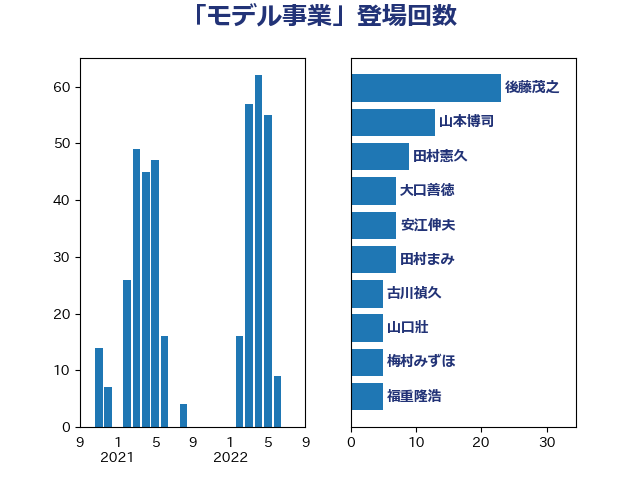

単語「モデル事業」

| 後藤茂之 | 自由民主党 | 23 回 |
| 山本博司 | 公明党 | 13 回 |
| 田村憲久 | 自由民主党 | 9 回 |
| 大口善徳 | 公明党 | 7 回 |
| 安江伸夫 | 公明党 | 7 回 |
| 田村まみ | 国民民主党 | 7 回 |
| 古川禎久 | 自由民主党 | 5 回 |
| 山口壯 | 自由民主党 | 5 回 |
| 梅村みずほ | 日本維新の会 | 5 回 |
| 福重隆浩 | 公明党 | 5 回 |
| 野田聖子 | 自由民主党 | 5 回 |
| 中川正春 | 立憲民主党 | 4 回 |
| 宮路拓馬 | 自由民主党 | 4 回 |
| 小泉進次郎 | 自由民主党 | 4 回 |
| 佐藤英道 | 公明党 | 3 回 |
| 加藤勝信 | 自由民主党 | 3 回 |
| 務台俊介 | 自由民主党 | 3 回 |
| 吉田宣弘 | 公明党 | 3 回 |
| 笹川博義 | 自由民主党 | 3 回 |
| 金子恭之 | 自由民主党 | 3 回 |
| 高木かおり | 日本維新の会 | 3 回 |
| 今井絵理子 | 自由民主党 | 2 回 |
| 伊佐進一 | 公明党 | 2 回 |
| 加田裕之 | 自由民主党 | 2 回 |
| 坂本哲志 | 自由民主党 | 2 回 |
| 川田龍平 | 立憲民主党 | 2 回 |
| 早稲田ゆき | 立憲民主党 | 2 回 |
| 杉久武 | 公明党 | 2 回 |
| 横山信一 | 公明党 | 2 回 |
| 深澤陽一 | 自由民主党 | 2 回 |
| 田畑裕明 | 自由民主党 | 2 回 |
| 福島みずほ | 社会民主党 | 2 回 |
| 自見はなこ | 自由民主党 | 2 回 |
| 萩生田光一 | 自由民主党 | 2 回 |
| 西岡秀子 | 国民民主党 | 2 回 |
| 赤羽一嘉 | 公明党 | 2 回 |
| 野上浩太郎 | 自由民主党 | 2 回 |
| たがや亮 | れいわ新選組 | 1 回 |
| 上野通子 | 自由民主党 | 1 回 |
| 丸川珠代 | 自由民主党 | 1 回 |
| 井上信治 | 自由民主党 | 1 回 |
| 倉林明子 | 日本共産党 | 1 回 |
| 古屋範子 | 公明党 | 1 回 |
| 吉田とも代 | 日本維新の会 | 1 回 |
| 和田政宗 | 自由民主党 | 1 回 |
| 城井崇 | 立憲民主党 | 1 回 |
| 宮内秀樹 | 自由民主党 | 1 回 |
| 尾崎正直 | 自由民主党 | 1 回 |
| 山添拓 | 日本共産党 | 1 回 |
| 山田太郎 | 自由民主党 | 1 回 |
| 平山佐知子 | 無所属 | 1 回 |
| 斎藤洋明 | 自由民主党 | 1 回 |
| 末松信介 | 自由民主党 | 1 回 |
| 永岡桂子 | 自由民主党 | 1 回 |
| 江島潔 | 自由民主党 | 1 回 |
| 池下卓 | 日本維新の会 | 1 回 |
| 河西宏一 | 公明党 | 1 回 |
| 清水貴之 | 日本維新の会 | 1 回 |
| 穂坂泰 | 自由民主党 | 1 回 |
| 竹内真二 | 公明党 | 1 回 |
| 竹谷とし子 | 公明党 | 1 回 |
| 菅家一郎 | 自由民主党 | 1 回 |
| 藤井比早之 | 自由民主党 | 1 回 |
| 西銘恒三郎 | 自由民主党 | 1 回 |
| 角田秀穂 | 公明党 | 1 回 |
| 鈴木俊一 | 自由民主党 | 1 回 |
| 長友慎治 | 国民民主党 | 1 回 |
| 長浜博行 | 無所属 | 1 回 |
| 青山周平 | 自由民主党 | 1 回 |
| 鳩山二郎 | 自由民主党 | 1 回 |